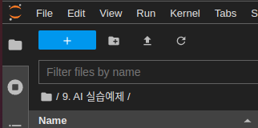
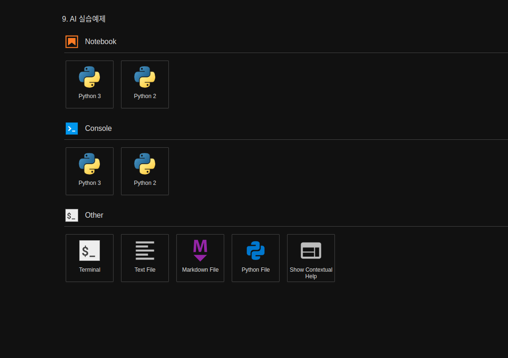

Mission
Project Name: Custom Pose Estimation System
Writing Custom detectNet Program
Similar to how we created a new python file in our team assignment, generate a new python file and name it 02_6-2. object_detection_camera.py.
Create a new python file in the Jupyter Notebook Environment:
Press the blue plus button on the top left corner of the web.

Create a new python file by pressing the
Python Filebutton
Rename the untitiled python file to
02_6-2. object_detection_camera.pyOn the new python file, import the libraries necessary. For our Pose Estimation task, we need to import the Jetson inference library modules and jetson utility library modules
argparse: This library contains modules that are responsbile for bringing and intitializing the flags or parameters set by the user when envoking the program.sys: this library allows us to manipulate/ utilize system functions within our python programs.jetson_inference: This library contains all the pre-built networks that can be used for inference task and a functions that would allow for custom models to be used for inference tasks.detectNet: We are importing detectNet module for our detect task.
jetson_utils: This library contains modules that are responsible for processing input and output sources along with output stream methods. We will be importing the following modules:videoSource: used to process input source (whether it is a camera, an image, or a video).videoOutput: used to process the output stream.cudaFont: this module allows for overlay on the output stream.
import argparse import sys from jetson_inference import poseNet from jetson_utils import videoSource, videoOutput, cudaFont
After all the libraries are imported, initialize the parser variable with
argparse.ArgumentParsermodule.For our mission, we must receive the network name, and Camera output channel name. Additionally we add 2 other optional parsers.
# parse the command line # For our mission, We recieve the network name, and Camera name. # Set up argument parser, so that command line parameters can be read within the program parser = argparse.ArgumentParser(description="Locate objects in a live camera stream using an object detection DNN.", formatter_class=argparse.RawTextHelpFormatter, epilog=detectNet.Usage() + videoSource.Usage() + videoOutput.Usage()) # Major Functionality parameters (required from the user) parser.add_argument("input_CAMERA", type=str, default="", nargs='?', help="use csi://0 for Raspberry pi Camera") parser.add_argument("--network", type=str, default="", help="pre-trained model to load") # Minor Functionality parameters (optional) parser.add_argument("--overlay", type=str, default="box,labels,conf", help="detection overlay flags (e.g. --overlay=box,labels,conf)\nvalid combinations are: 'box', 'labels', 'conf', 'none'") parser.add_argument("--threshold", type=float, default=0.5, help="minimum detection threshold to use")
Initialize opt variable to hold all the user-set flags in a list form. If the user has set no flags, terminate the program:
# If no parameter is given from the user, shut the program down try: opt = parser.parse_known_args()[0] except: print("") parser.print_help() sys.exit(0)
Initialize the necessary variables. Since we wish to infer a network with a camera and show the results with our output stream we will need:
netvariable for holding the nvidia pre-built networks. For this mission we are using detectNet network.inputvariable for handling the input stream. Using theoptvariable created in our previous step, we will bring in input_CAMERA to set our videoSource.displayvariable for handling the output stream. Although we are accessing the code remotely on our remote computer, the zetabot is equipped with a touch screen display. The display is set onDISPLAY://0
# create video sources and outputs input = videoSource(opt.input_CAMERA, argv=sys.argv) output = videoOutput("DISPLAY://0", argv=sys.argv) # load the object detection network net = detectNet(opt.network, sys.argv, opt.threshold)
For this task we are utilizing our camera. On our previous trials, we had to to an inference on a single image. The program could recieve the one image infer it with the network and output a single result.
But with a camera, we need to repeatedly run the inference so that we may capture the incoming frames from the camera and output a constant stream of results.
We may achieve this by running a while loop until an envoked output stream window is killed by the user.
# process frames until the user exits while display.IsStreaming():
Within the while loop:
Capture the current frame from the camera, run the inference, and determine the estimated detect of the object.
# Capture each of the frames of camera img = camera.Capture() # detect objects in the image (with overlay) detections = net.Detect(img, overlay=opt.overlay)
It shows the number of detected objects and the name of the detected object
# print the detections print("detected {:d} objects in image".format(len(detections))) for detection in detections: print(detection)
Render the result output and update the title bar of the output window.
# render the image output.Render(img) # update the title bar output.SetStatus("{:s} | Network {:.0f} FPS".format(opt.network, net.GetNetworkFPS()))
Executing the Custom Program
Open the
02_6-2. object_detection_camera.pynotebook.

Run the cell code which initializes the input/ output stream of the environment as well as the CAMERA variable, which will be the flag that determines the input vairable for the program to be a camera stream.
%env DISPLAY=:0 %env csi=:0 %env CAMERA=csi://0
Check if your python notebook can read the python code you have written:
cat /home/zeta/notebook/lecture/'2.AI Training Examples'/'02_6-2. object_detection_camera.py'
One important thing about the zetabot is that the Raspberry Pi camera is constantly running.
In order to use the camera for our task we must disable it first by running the following command:
%%capture !pm2 stop jetson_camera
This will allow the camera to be used for our program.
Execute the pose_estimation_camera python code.
Note that we are setting our major functions,
--network: to set which networks to use in our pose estimation task.input_CAMERA: to set which input stream will be used for our task. It is being set to CAMERA environment variable which holdscsi://0as a string.
%%capture !python3 /home/zeta/notebook/lecture/'2.AI Training Examples'/'02_6-2. object_detection_camera.py' --network=ssd-mobilenet-v2 $CAMERA
Be sure to turn the camera back online by:
%%capture !pm2 start jetson_camera

{kind=link}
{kind=link}
{kind=link}